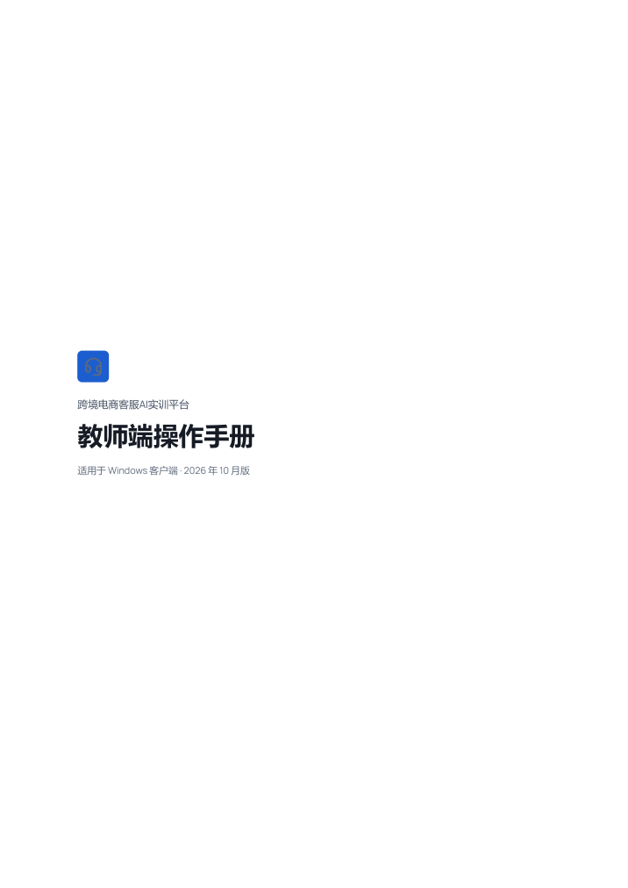

导出的三本 PDF 现在第一页只有标识、平台名和书名（下图左），不像封面。下面三版，每版把学生端、教师端、管理端三本都画出来；按 A4 等比例缩小，选定后照这个样子改。

整页品牌蓝，铺到纸边；下半页露出一张这一端的主界面截图（学生：客服工作台，教师：实训跟踪，管理员：系统总览），一眼看出是哪一端。
背景和插画用登录页那张等距工作间（产品自己的主视觉），铺到纸边；上面是书名。三本只差书名和下面一行，统一、好认。
白底，四周留页边距，书名左边一道品牌蓝竖线，中间放这一端的截图，底部一条细线写平台名和版次。最朴素，打印省墨。
| # | 事项 | 建议 |
|---|---|---|
| 1 | 选哪一版 | B。和登录页同一张插画，看着就是这个平台的东西；三本风格一致，只靠书名区分 |
| 2 | 书名下面要不要“本册内容”那一行（列出主要章节） | 要。拿到 PDF 不用翻目录就知道这本讲什么；“开始使用”“常见问题”这类不列 |
其他照现在的规则：平台名称和标识跟着管理端的品牌设置走，学校改名后封面跟着变；插画和截图不变。封面后面是目录页、正文，都不动。
技术上已经实测：客户端导出 PDF 时，可以只给封面这一页去掉页边距，颜色和插画铺到纸边，后面各页照常留边；不影响考核报表的打印。